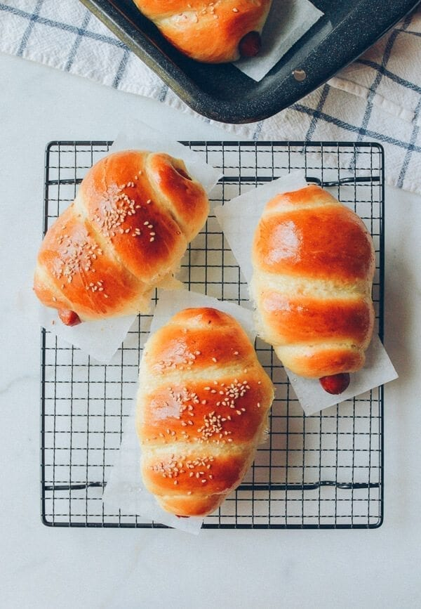

Chinese Hot Dog Buns

Description
These fluffy hot dog buns will blow your mind. They're soft, tender, rich, smooth, and super buttery.
The fluffy bread is wrapped around a hot dog for a satisfying snack. Perfect for on-the-go!
Ingredients
Tangzhong:
- 25g bread flour
- 125ml milk
For Bread:
- 350g bread flour
- 55g sugar
- 3g salt
- 7g yeast
- 15g milk powder (optional)
- 1 large egg (room temperature)
- 125ml milk
- 30g unsalted butter (room temperature)
Steps
- Make the tangzhong.
- Set aside and cool to room temperature.
- In bowl of mixer, mix bread flour, sugar, salt, yeast mixture (milk and yeast), and milk powder
- Add butter and mix for 5 mins on low speed.
- Increase speed to medium and mix for another 5mins.
- Total in mixer - 15 mins.
- Let dough sit for 1~ hour until dough doubles size.
- Deflate dough and separate into 10 pieces.
- Roll around hot dogs.
- Bake at 350 degrees for 25 minutes